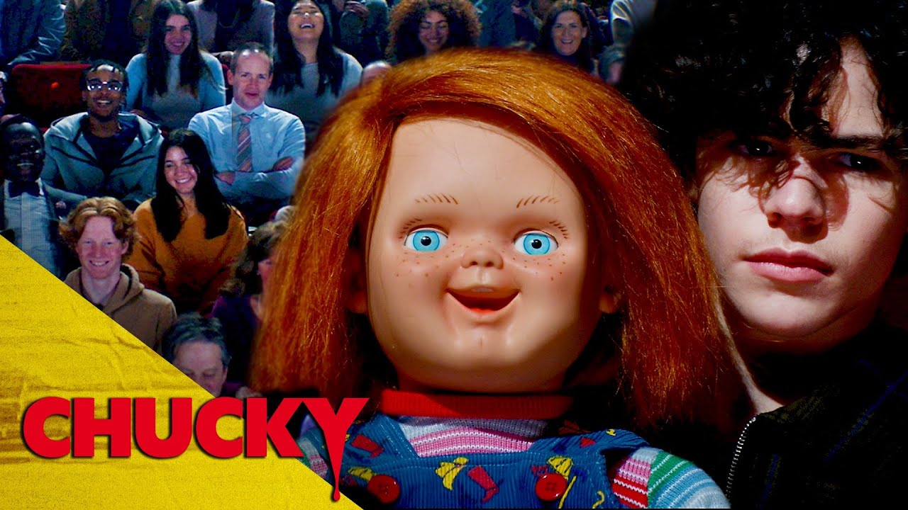

Si bien en Estados Unidos, Chucky, la serie ya ha concluido con sus estrenos semanales, en Latinoamérica recién se estrenará su explosivo final de temporada. En ese sentido, el capítulo 8 estará disponible a partir de este miércoles 15 de diciembre. Por otro lado, si deseas saber a qué hora llegará, la producción de Don Mancini solía emitir sus nuevos episodios entre las 9 y 10 de la mañana en SyFy. Sin embargo, en nuestra región no se ha detallado un horario específico, por lo que es probable que llegue en la madrugada o a lo largo de la mañana.
Durante una promoción limitada, Star Plus anunció Pase Libre, un método de acceso bajo el cual se podía reproducir su contenido de manera ilimitada y totalmente gratis. Sin embargo, la última vez que estuvo activa fue del viernes 10 al domingo 12 de diciembre, por lo que ahora es necesario contar con una suscripción. Pero, muchas personas optan por contratar el Combo+, una oferta de pago que permite el ingreso a la videoteca de contenido tanto de la mencionada plataforma como a la de Disney Plus, bajo un solo precio de afiliación: 44.90 soles por mes.
A diferencia de su competencia directa como HBO Max y Amazon Prime Video, que ofrecen un periodo de prueba gratuito, Star Plus no permite aquella posibilidad. Por ello, quienes deseen reproducir cualquier título de su catálogo deben contar con una suscripción. Pero podrás verla en el enlace que te ofrecemos mas adelante